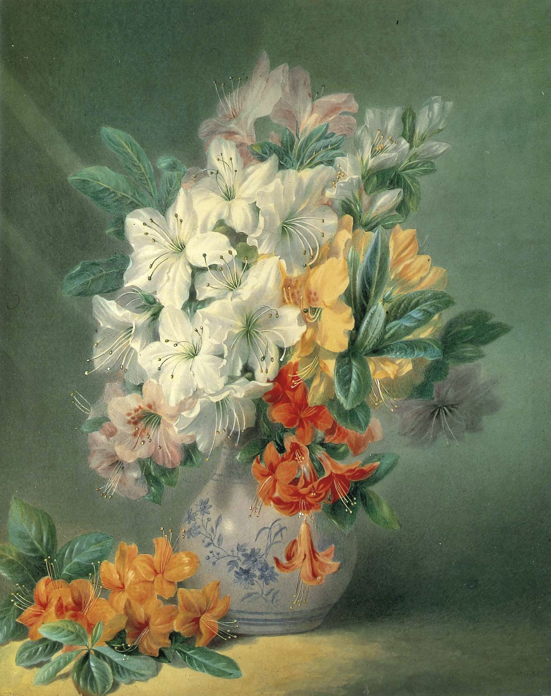

作品名 「アザレア」
花言葉 「恋の喜び」「節制」「禁酒」
アザレア
「恋の喜び」
アザレアはラテン語の「azaleos」が由来だとされています。アザレアは暑さに強く、乾燥した土地でも成長するため「azaleos」ラテン語で「乾燥」を意味する言葉が付けられたとされています。アザレアは、花の根元に毒素を持っています。これは、アザレアの花の蜜に含まれており、体内に入ると麻痺や痙攣だけでなく、嘔吐や昏睡に至る場合があります。アザレアの花びらの形は、恋をしている女性が嬉しそうに舞うスカートの裾の形に似ていることから、「恋の喜び」という花言葉が付けられました。
アザレア
ヴァレンタイン・バーソロミュー
色とりどりのアザレアを行けた花瓶とその脇に置かれた一枝のアザレアを輝くような美しい色彩で描いている。バーソロミューは、フランス生まれのポーランド系の画家。彼は20世紀のフランス美術界を代表する画家の1人とされています。彼の画風は写実的でありながらも、幻想的な要素も備えており、特に青年期の女の子を描いた作品が有名です。
| 作品名 | アザレア |
| 作者 | ヴァレンタイン・バーソロミュー |
| 制作年 | 1840年 |
| 種類 | 紙・水彩 |
| 寸法 | 41.9cm × 33.9cm |
| 所蔵 | ヴィクトリア・アンド・アルバート美術館 |